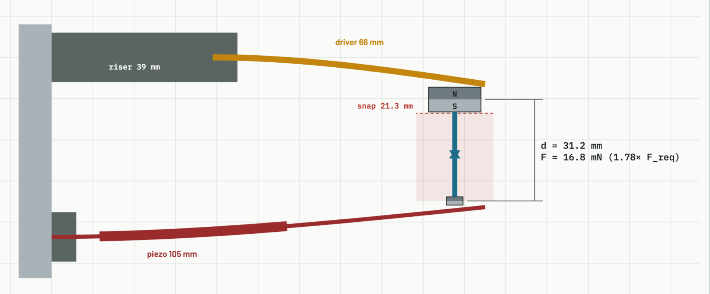
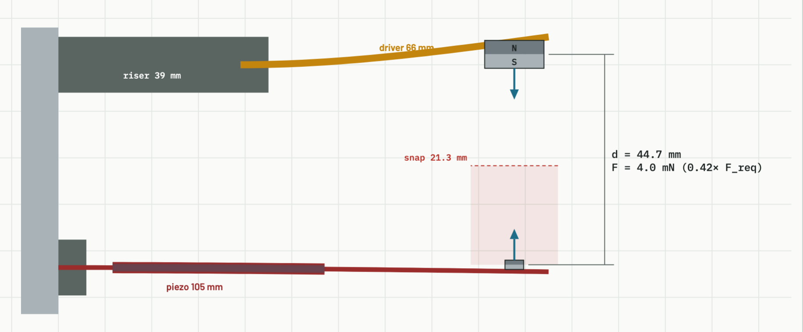
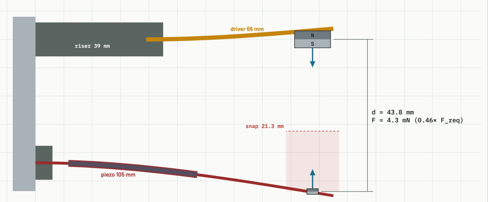

Possible Solution #3
MagPluck: Magnetically Plucked Dual Cantilever
What Is This Solution?
MagPluck keeps the good idea from Solution #2 (a slow driver plucks a piezo beam) but replaces the pick with a pair of magnets, so nothing ever touches. Two cantilevers share one base. The driver beam carries a large magnet and is tuned to about 16 Hz, so it swings with slow car vibration. The piezo beam carries a PZT bimorph and a small magnet. The two magnets face each other across an air gap of about 39 mm (Figure H).

1. Driver swings closemagnetic pull bends the piezo beam

2. Driver swings awaypull fades fast (1/d⁴): beam is released

3. Piezo beam ringsPZT makes voltage; nothing touched
Figure H: One magnetic pluck in three steps, from our sideways simulation (driver beam gold, piezo beam red, PZT shaded).Screenshots of our team's simulation (105 mm version); piezo motion drawn 8× larger.
Figure I: Our 85 mm version shaken at 2 m/s², with and without magnets.Simulated by our team; the magnets never touched in any run.
Scientific Basis
- Steep magnetic force: The pull between two facing magnets is F = C/d⁴. Halving the gap makes the pull 16 times stronger, so a small driver swing becomes a big change in force: a pluck.
- Snap safety rule: If the gap gets too small, the pull grows faster than the beam can resist (4C/d⁵ > k) and the magnets snap together. We design the closest approach to be 1.5 times this snap distance.
Engineering Feasibility
Every part is buildable: 3D-printed PETG beams, off-the-shelf N52 magnets, and a store-bought PZT bimorph. We checked the design with a computer model of both beams, the magnetic force, and the piezo circuit:
- We found and fixed a sizing error. Our first calculation had the snap distance about 2.4 times too small. At the original 8–10 mm gap, the model showed the magnets snapping together. A shorter, stiffer driver with a larger magnet fixed it.
- No contact: In our 1,278-run frequency sweep (5–40 Hz), the magnets never touched.
- More output: At the driver's frequency, the magnets raised output 2.1 to 3.9 times compared with the same beams without magnets, adding a second working peak (Figure I).
| R1 Low frequency | | Driver tuned to about 16 Hz; piezo beam stays at 18–26 Hz. |
| R2 Non-contact | | Magnets pluck across an air gap that always stays wider than the snap distance. |
| R3 Range of frequencies | | Two working peaks instead of one; full plucks so far only near the driver's frequency. |
| R4 Simple and passive | | No motors or power needed; the gap only has to be set once. |
meets partly meets does not meet. Scores are our team's judgment from the cited sources and our model.
7